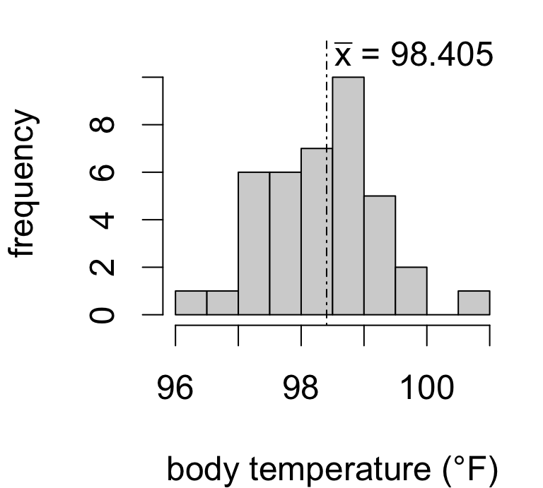
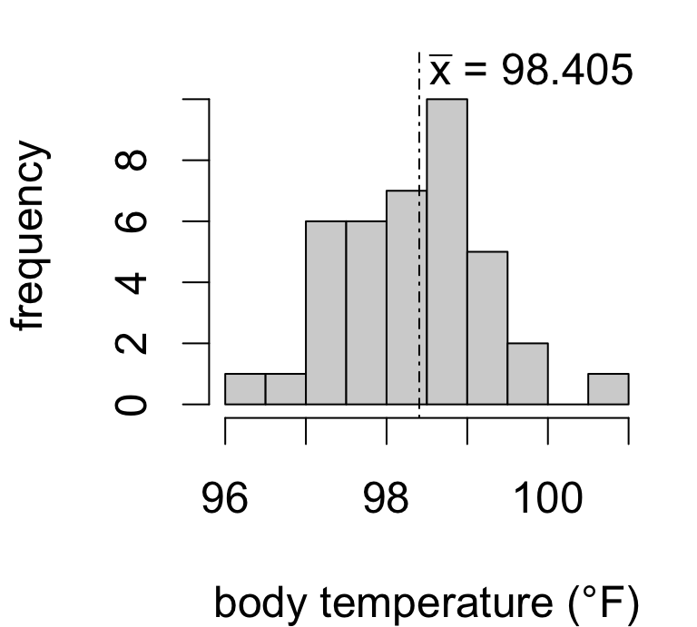
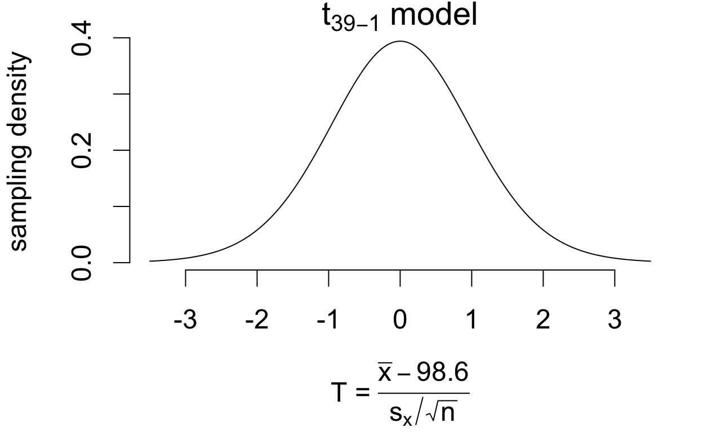
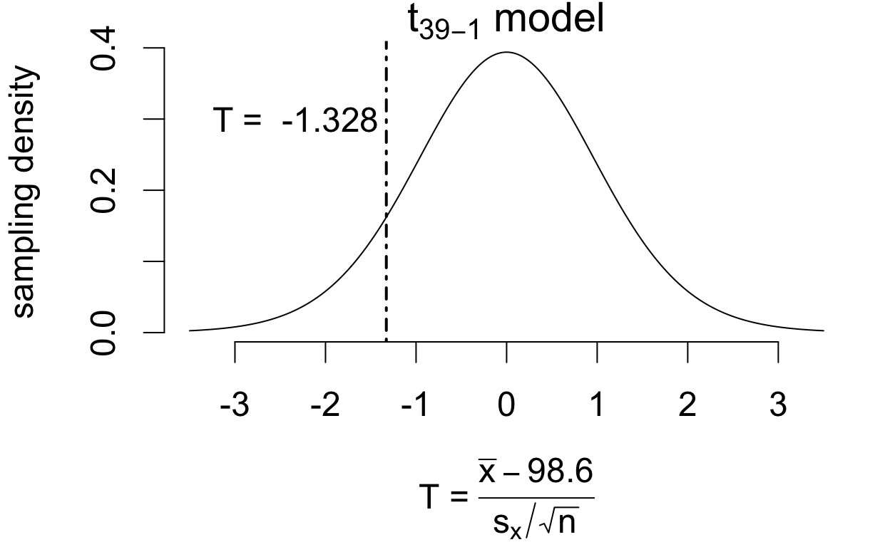
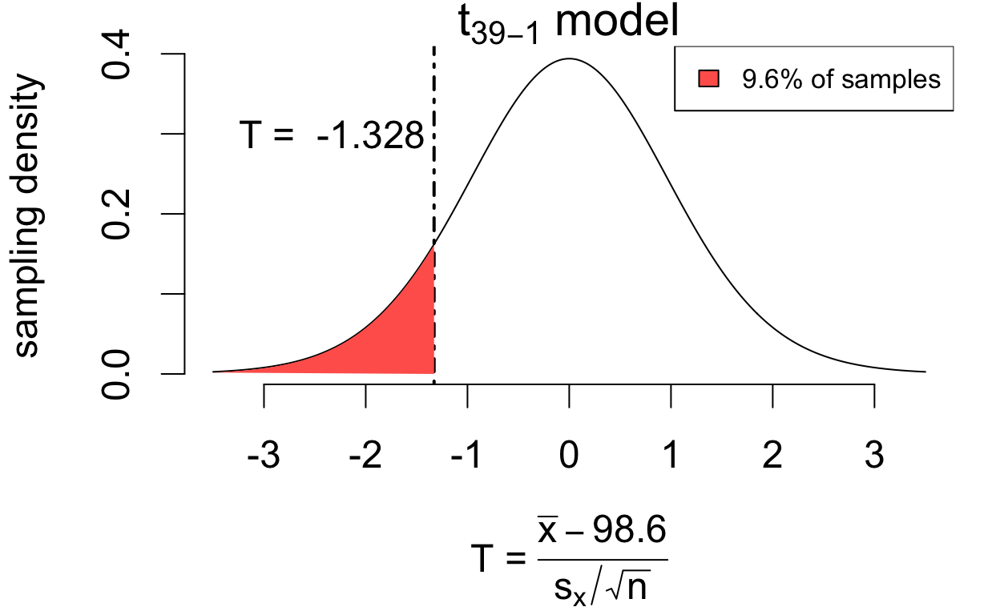
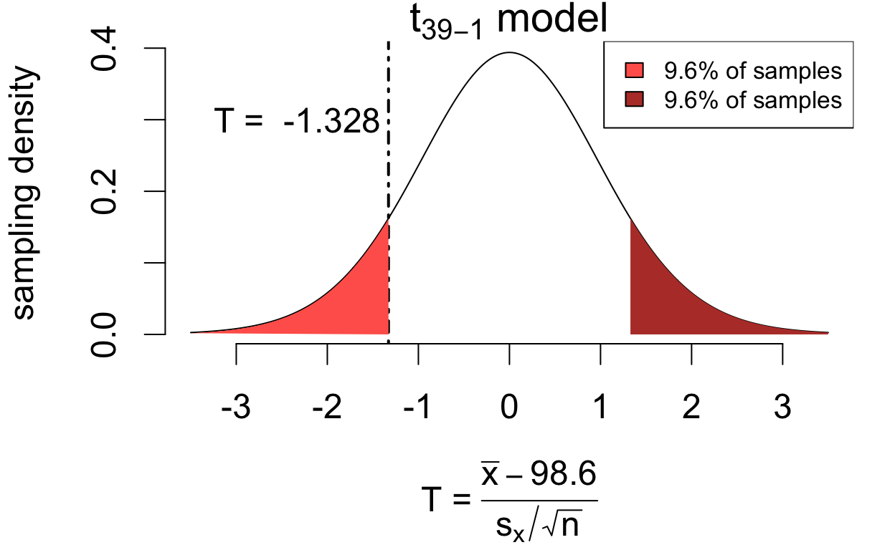
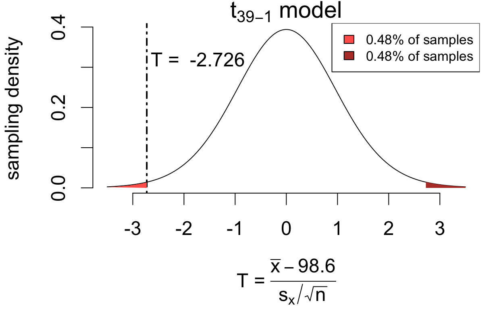

| mean | sd | n | se |
|---|---|---|---|
| 98.41 | 0.9162 | 39 | 0.1467 |
One-sample \(t\) test for a population mean

| mean | sd | n | se |
|---|---|---|---|
| 98.41 | 0.9162 | 39 | 0.1467 |
Is the true mean body temperature actually 98.6°F?
Seems plausible given our data.
But what if the sample mean were instead…
| \(\bar{x}\) | consistent with \(\mu = 98.6\)? |
|---|---|
| 98.30 | probably still yes |
| 98.15 | maybe |
| 98.00 | hesitating |
| 97.85 | skeptical |
| 97.40 | unlikely |
If the estimation error is “big enough” the hypothesis seems implausible.
Consider how many standard errors away from the hypothesized value we’d be:
| \(\bar{x}\) | estimation error | no. SE’s | interpretation |
|---|---|---|---|
| 98.30 | -0.3 | 2 | double the average error |
| 98.15 | -0.45 | 3 | triple the average error |
| 98.00 | -0.6 | 4 | quadruple |
| 97.85 | -0.75 | 5 | quintuple |
| 97.40 | -1.2 | 8 | octuple! |
We know from discussing confidence intervals that we’d estimate the mean temperature to be within about 2SE of the sample mean, and from interval coverage that:
Exactly how often would we see the error we did if the population mean is in fact 98.6°F?
If the population mean is in fact 98.6°F then \[ T = \frac{\bar{x} - 98.6}{s_x/\sqrt{n}} \qquad\left(\frac{\text{estimation error}}{\text{standard error}}\right) \] has a sampling distribution that is well-approximated by a \(t_{39 - 1}\) model.

If the population mean is in fact 98.6°F then \[ T = \frac{\bar{x} - 98.6}{s_x/\sqrt{n}} \qquad\left(\frac{\text{estimation error}}{\text{standard error}}\right) \] has a sampling distribution that is well-approximated by a \(t_{39 - 1}\) model.

If the population mean is in fact 98.6°F then \[ T = \frac{\bar{x} - 98.6}{s_x/\sqrt{n}} \qquad\left(\frac{\text{estimation error}}{\text{standard error}}\right) \] has a sampling distribution that is well-approximated by a \(t_{39 - 1}\) model.

If the population mean is in fact 98.6°F then \[ T = \frac{\bar{x} - 98.6}{s_x/\sqrt{n}} \qquad\left(\frac{\text{estimation error}}{\text{standard error}}\right) \] has a sampling distribution that is well-approximated by a \(t_{39 - 1}\) model.

If the population mean is in fact 98.6°F then \[ T = \frac{\bar{x} - 98.6}{s_x/\sqrt{n}} \qquad\left(\frac{\text{estimation error}}{\text{standard error}}\right) \] has a sampling distribution that is well-approximated by a \(t_{39 - 1}\) model.

\[P(|T| > 1.328) = 0.192\]
We’d see at least as much (absolute) estimation error 19.2% of the time, assuming the hypothesis is true. So this amount of error isn’t surprising.
If the population mean is in fact 98.6°F then \[ T = \frac{\bar{x} - 98.6}{s_x/\sqrt{n}} \qquad\left(\frac{\text{estimation error}}{\text{standard error}}\right) \] has a sampling distribution that is well-approximated by a \(t_{39 - 1}\) model.

\[P(|T| > 2.726) = 0.0096\]
We’d see at least as much estimation error only 0.96% of the time. So if the hypothesis were true, this sample would be really unusual.
To evaluate the hypothesis that \(\mu = 98.6\), we assume it is true and then consider whether the estimation error would be unusually large purely by chance according to the \(t\) model:
We just made these assessments:
| sample.mean | se | t.stat | how.often | evaluation |
|---|---|---|---|---|
| 98.41 | 0.1467 | -1.328 | 0.192 | not unusual |
| 98.2 | 0.1467 | -2.726 | 0.009632 | unusual |
Seems reasonable, but why exactly isn’t 19.2% of the time ‘unusual’?
What would happen if we decided that \(T = -1.328\) was unusual?
| sample.mean | se | t.stat | how.often |
|---|---|---|---|
| 98.41 | 0.1467 | -1.328 | 0.192 |
| 98.2 | 0.1467 | -2.726 | 0.009632 |
Suppose we drew a line at 20%. Then if in fact \(\mu = 98.6\):
This error rate is too high.
A statistical hypothesis is a statement about a population parameter. For every hypothesis there is an opposing or “alternative” hypothesis.
A hypothesis test is a procedure for deciding between a hypothesis and its alternative.
We just tested the hypotheses:
\[ \begin{cases} H_0: &\mu = 98.6 \quad(\text{"null" hypothesis}) \\ H_A: &\mu \neq 98.6 \quad(\text{"alternative" hypothesis}) \end{cases} \]
Our decision was based on the “test statistic”:
\[ T = \frac{\bar{x} - 98.6}{SE(\bar{x})} \]
If \(H_0\) is true, the sampling distribution of \(T\) is well-approximated by a \(t_{n-1}\) model.
We reject \(H_0\) if it entails that the estimation error is unusually large relative to the standard error.
‘unusual’ determined by considering error rate
two equivalent approaches:
Reject \(H_0\) if \(|T|\) exceeds the \(1 - \frac{\alpha}{2}\) quantile of the \(t_{n - 1}\) model
Steps:
# compute test statistic
tstat <- (temp.mean - 98.6)/temp.mean.se
tstat[1] -1.328265# compute critical value for a 5% error tolerance
crit.val <- qt(p = 0.975, df = 38)
crit.val[1] 2.024394# compare
abs(tstat) > crit.val [1] FALSERationale: if \(H_0\) is true…
Reject \(H_0\) if \(T\) exceeds the observed value for less than \(\alpha\times 100\)% of samples: \[2\times P(T > |T_\text{obs}|) < \alpha\]
Steps:
# compute test statistic
tstat <- (temp.mean - 98.6)/temp.mean.se
tstat[1] -1.328265# proportion of samples where T exceeds observed value
p.val <- 2*pt(abs(tstat), df = 38, lower.tail = F)
p.val[1] 0.1920133# decision with error rate controlled at 5%
p.val < 0.05[1] FALSERationale:
There are two possible findings for a test:
A reject decision is interpreted as:
The data provide evidence that… [against \(H_0\)/favoring \(H_A\)]
A fail to reject decision is interpreted as:
The data do not provide evidence that… [against \(H_0\)/favoring \(H_A\)]
Calculations in R:
# compute test statistic
tstat <- (temp.mean - 98.6)/temp.mean.se
tstat[1] -1.328265# compute critical value for a 5% error tolerance
crit.val <- qt(p = 0.975, df = 38)
crit.val[1] 2.024394# test decision
abs(tstat) > crit.val[1] FALSE# p-value
2*pt(abs(tstat), df = 38, lower.tail = F)[1] 0.1920133Conventional narrative summary style:
The data do not provide evidence that the mean body temperature differs from 98.6°F (T = -1.328 on 38 degrees of freedom, p = 0.192).
Conveys a lot of info succinctly:
| Component | Explanation | Example |
|---|---|---|
| Population parameter | The quantity of interest | Mean body temp \(\mu\) |
| Null hypothesis | The claim to be tested | \(\mu = 98.6\) |
| Alternative hypothesis | The alternative claim | \(\mu \neq 98.6\) |
| Test statistic | A function of the sample data and the hypothetical parameter value | \(T = \frac{\bar{x} - 98.6}{s_x/\sqrt{n}} = -1.328\) |
| Model | Sampling distribution of the test statistic under \(H_0\) | \(t_{38}\) model |
| \(p\)-value | Probability under \(H_0\) of obtaining a result at least as favorable to \(H_A\) | 19.2% of samples produce a test statistic at least as large |
| Decision | Reject or fail to reject \(H_0\) in favor of \(H_A\) | Fail to reject |